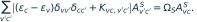
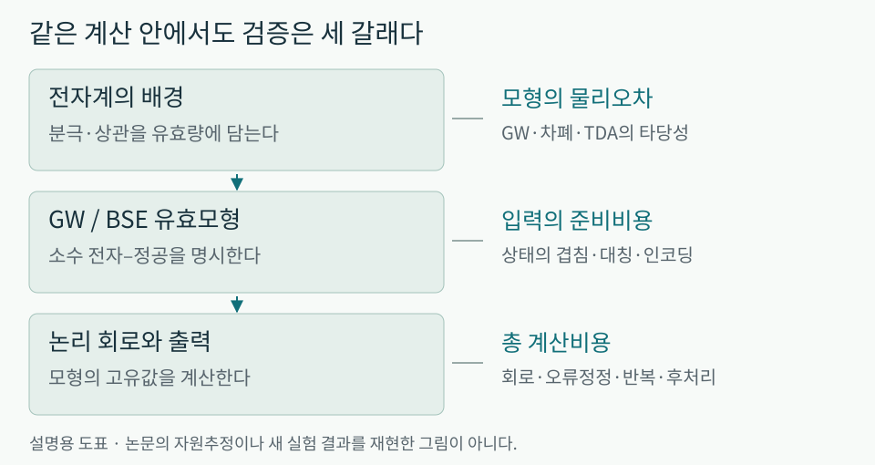
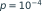

엑시톤에서 최적해까지: 물리적 구조가 바꾸는 양자계산 비용
다중 엑시톤의 Bethe–Salpeter 모형, 구조를 이용한 어닐링·상태준비, 그리고 공정한 검증의 조건
RESEARCH LETTER · 2026년 10월 6일 · 물리적 소양을 갖춘 독자를 위한 해설

내용 살펴보기
1. 물질의 모든 전자를 계산해야 할까
OLED에서 전자와 정공이 만나 빛을 내는 과정을 생각해 보자. 관심 있는 것은 단순히 전자가 어디에 있는지가 아니다. 둘이 얼마나 강하게 결합하는지, 스핀 상태에 따라 에너지가 어떻게 달라지는지, 다른 여기와 만나 어떤 경로로 에너지를 잃는지가 중요하다. 이런 질문에는 전자들의 집단적 반응이 들어간다. 그러나 그것을 기술하기 위해 언제나 물질의 모든 전자를 하나하나 추적해야 하는 것은 아니다.
많은 물리 모형은 이 간극에서 출발한다. 배경의 복잡한 운동을 유효 질량이나 유전 응답에 담고, 관심 있는 소수의 자유도만 명시적으로 남긴다. 이때 ‘준입자’는 실제 입자가 하나 더 생겼다는 뜻이 아니라, 주변의 반응까지 포함하여 움직이는 유효한 들뜸을 뜻한다. 유효모형이 잘 작동하면 계산을 크게 줄일 수 있다. 반대로 생략한 물리가 관측량을 지배하면, 그 모형을 정확하게 풀어도 실험을 정확하게 예측하지 못한다.
이번 호의 중심 질문은 이것이다. 양자컴퓨터에 큰 문제를 그대로 넘기는 대신, 먼저 물리와 문제 구조를 이용해 계산할 대상을 바꾸면 무엇이 달라지는가? 최근 BSE 양자계산 연구는 이 질문을 재료 여기상태에 적용한다. 양자 어닐링과 상태준비 연구는 그래프와 얽힘의 구조를 이용한다. 이어지는 QML·오류정정 사례는 ‘구조를 이용한 개선’이 유효하려면 비교 조건도 함께 설계해야 한다는 점을 보여 준다.
2. 엑시톤은 두 입자의 문제가 아니라 배경을 품은 두 입자의 문제다
빛이 전자를 들뜨게 하면, 채워져 있던 상태에는 정공이 남는다. 정공은 양전하를 가진 별도 기본입자가 아니라 전자의 부재를 입자처럼 기술한 것이다. 전자와 정공은 Coulomb 인력으로 상관된다. 두 입자가 독립적으로 움직일 때의 에너지와 결합한 여기의 에너지가 다르면, 그 차이가 엑시톤 결합에 대한 정보를 준다.
여기서 주변 전자와 물질의 분극을 무시할 수 없다. 진공의 Coulomb 상호작용과 물질 안의 유효 상호작용은 다르다. GW 근사에서는 전자의 전파를 기술하는 Green 함수 와 차폐된 상호작용 로 자기 에너지를 근사한다. BSE(Bethe–Salpeter equation)는 이 준입자들을 바탕으로 전자–정공의 상관된 여기상태를 구한다. 기존 물질 계산에서 쓰이던 물리적 기술을 양자 알고리즘으로 옮기는 것이다. [6]
단일 전자–정공 쌍을 이해하기 위한 표준적인 도식은 다음과 같다. 아래 식은 새 논문의 자원표가 아니라 BSE의 물리 내용을 설명하는 표기다.

는 점유 상태, 는 비점유 상태다.  는 독립 준입자 여기 에너지이고, 는 전자–정공 사이의 직접 상호작용과 교환을 담은 결합 항이다.
는 독립 준입자 여기 에너지이고, 는 전자–정공 사이의 직접 상호작용과 교환을 담은 결합 항이다.  는 어떤 전자–정공 조합이 여기상태 에 얼마나 참여하는지, 는 그 상태의 에너지다. 요점은 상태의 이름이나 큐비트 수가 아니라 독립 입자 에너지 위에 어떤 상관을 복원하느냐에 있다.
는 어떤 전자–정공 조합이 여기상태 에 얼마나 참여하는지, 는 그 상태의 에너지다. 요점은 상태의 이름이나 큐비트 수가 아니라 독립 입자 에너지 위에 어떤 상관을 복원하느냐에 있다.
직접항의 차폐와 교환항을 같은 것으로 생각하면 안 된다. 이번 연구의 모형에서는 직접 상호작용은 차폐를 포함하지만 전자–정공 교환은 bare Coulomb 항을 사용한다. 교환의 스핀 의존성은 단일항·삼중항 에너지 차이를 이해하는 데 중요하다. 다중 엑시톤으로 가면 전자–전자, 정공–정공 상호작용도 필요하다. ‘전자–정공 결합 에너지 하나’만으로 여러 여기 사이의 상관을 대표할 수 없는 이유다. [1]

OLED 연구에 닿는 부분과 아직 닿지 않은 부분
OLED 연구자에게 이 틀이 흥미로운 이유는 단일항·삼중항 분리, 여기의 공간적 성격, 여러 여기 사이의 상관을 하나의 계산 언어로 연결할 가능성 때문이다. 하지만 이번 논문은 OLED 분자나 소자의 발광효율·수명을 검증하지 않았다. 유기물의 구조 변화, 환경 분극, 스핀–궤도 결합, 진동 결합, 비복사 경로까지 자동으로 포함되는 것도 아니다. 이 연결은 리뷰어의 적용 해석이다.
따라서 먼저 물어야 할 것은 ‘우리 분자를 몇 큐비트에 넣을 수 있는가’가 아니다. ‘관심 관측량에 BSE 근사가 적합한가, 어떤 물리를 추가해야 하는가’다. 예를 들어 에너지 준위차를 잘 맞추는 모형과 역계간전이 속도를 잘 맞추는 모형은 요구 조건이 다를 수 있다. 단일항–삼중항 간격을 좁히는 것과 소자 수명을 늘리는 것은 같은 검증 과제가 아니다.
3. 큰 절감 수치 뒤에도 남는 계산 비용
Chen·Sun·Chan은 소수의 전자–정공을 명시적으로 남긴 BSE 해밀토니안을 1차 양자화 궤도 표현으로 구성하고, 적분 분해와 결정 대칭을 이용해 양자회로 자원을 줄인다. 세 엑시톤(트리엑시톤)은 전자 3개와 정공 3개의 상관 문제다. 스핀 삼중항(triplet)과 다른 개념이며, ‘3큐비트’도 재료의 모든 전자를 계산한 결과도 아니다. 정적 자기 에너지·정적 차폐·Tamm–Dancoff 근사를 사용한 미래 내결함성 자원분석이며 실제 QPU 실행은 없다. [1]
다이아몬드 , 즉 2,000원자 모형의 수치를 보자. 고유값당 목표 정밀도는 0.1 eV다. ‘수백 논리 큐비트’와 ‘게이트 비용 최소화’는 서로 다른 선택이다.
| 계산 설정 | 논리 큐비트 | Toffoli 수 |
|---|---|---|
| BSE, Toffoli 최소화 | 33,000 | |
| BSE, 큐비트 최소화 | 266 |  |
| 전체 해밀토니안, 2차 양자화 기준선 | — |  |
| 전체 해밀토니안, 1차 양자화 기준선 | — |  |
[1] Fig. 3 및 자원표. 고전 실행시간과의 비교가 아니라 양자 알고리즘 자원추정의 비교다. BSE의 여기 에너지와 전체 해밀토니안의 초격자 총에너지 추정이며, 에너지 차 산출의 상수 오버헤드는 제외되어 있다. 2차 양자화는 활성전자 궤도 모형, 1차 양자화는 80 Ry 의사퍼텐셜 평면파 모형이다. 여기서 ‘전체’는 BSE로 줄이기 전의 해밀토니안을 뜻하며 핵심부 전자까지 근사 없이 다루는 all-electron 계산이라는 뜻이 아니다. 최신 알고리즘 전체를 망라한 기준선도 아니다.
큐비트를 줄인 설정은 Toffoli 수가 약 36배 많다. 저장 공간을 아끼기 위해 데이터를 더 자주 불러오거나 연산을 반복하는, 계산에서 익숙한 공간–시간 절충이다. 또한 논리 큐비트는 물리 큐비트와 다르다. 오류정정 코드, 목표 실패확률, 논리 게이트 처리율, magic-state 공급과 배선을 정해야 실제 장치 규모와 시간을 말할 수 있다. 위 표만으로 실용적인 수행 시간을 계산할 수는 없다.
이 표현이 작은 레지스터에 들어가는 이유도 짚어 볼 만하다. 전자–정공 쌍의 수를 , 한 입자가 선택할 궤도 수를 규모 으로 생각하면, 단순한 곱공간의 크기는  수준이다. 각 입자의 궤도 번호를 이진수로 저장하는 레지스터는 약 비트면 된다. 따라서 고정 에서 공간 표현은 크게 압축된다. 그러나 모든 진폭을 읽는 비용까지 작아지는 것은 아니다. 레지스터 크기와 유용한 답을 얻는 시간은 별개의 양이다. 이 계산은 반대칭화·대칭·보조 레지스터를 생략한 설명용 차원 세기이지 위 표의 큐비트 산출식은 아니다.
수준이다. 각 입자의 궤도 번호를 이진수로 저장하는 레지스터는 약 비트면 된다. 따라서 고정 에서 공간 표현은 크게 압축된다. 그러나 모든 진폭을 읽는 비용까지 작아지는 것은 아니다. 레지스터 크기와 유용한 답을 얻는 시간은 별개의 양이다. 이 계산은 반대칭화·대칭·보조 레지스터를 생략한 설명용 차원 세기이지 위 표의 큐비트 산출식은 아니다.
또 하나의 큰 항목은 초기상태 준비비용이 제외되었다는 점이다. 위상추정은 목표 고유상태와 충분히 겹치는 입력이 있어야 원하는 에너지를 얻을 수 있다. 그 겹침이 작으면 같은 알고리즘을 더 많이 반복해야 한다. 이 조건은 총 비용을 바꿀 수 있다. BSE 모형의 근사오차와 수치 고유값 정밀도 0.1 eV도 별개다. 모형이 생략한 물리를 회로를 오래 실행하는 것으로 되살릴 수는 없다. [1]
일반적으로 블록 인코딩은 해밀토니안을 더 큰 유니터리의 일부에  형태로 넣는 방법이다. 이때
형태로 넣는 방법이다. 이때  는 정규화 크기다. 위상추정의 개략적인 비용 장부에는 다음 항목이 들어간다. [7]
는 정규화 크기다. 위상추정의 개략적인 비용 장부에는 다음 항목이 들어간다. [7]

이는 본 리뷰의 설명용 비용식이며 논문의 정밀 자원 공식은 아니다. 각  는 동일한 비용 또는 시간 단위로 환산한 양이며, CPU 연산 수와 Toffoli 수를 그대로 더하지 않는다.
는 동일한 비용 또는 시간 단위로 환산한 양이며, CPU 연산 수와 Toffoli 수를 그대로 더하지 않는다.  은 한 번 수행하는 고전 전처리, 는 매 시도에 필요한 상태준비, 는 한 번의 양자 walk 연산 비용이다. 은 에너지 정밀도,
은 한 번 수행하는 고전 전처리, 는 매 시도에 필요한 상태준비, 는 한 번의 양자 walk 연산 비용이다. 은 에너지 정밀도,  는 성공확률을 확보하기 위한 반복, 은 전체 출력·후처리 비용이다. 게이트 하나의 비용을 줄이는 것, 정규화 크기를 줄이는 것, 상태준비를 쉽게 하는 것은 서로 다른 개선이다. 논문의 큰 절감은 중요한 설계 진전이지만, ‘고전 재료 계산을 이미 대체했다’는 뜻은 아니다.
는 성공확률을 확보하기 위한 반복, 은 전체 출력·후처리 비용이다. 게이트 하나의 비용을 줄이는 것, 정규화 크기를 줄이는 것, 상태준비를 쉽게 하는 것은 서로 다른 개선이다. 논문의 큰 절감은 중요한 설계 진전이지만, ‘고전 재료 계산을 이미 대체했다’는 뜻은 아니다.
4. 양자 어닐링: 좋은 해 하나와 다양한 좋은 해는 다른 목표다
양자 어닐링의 minimum vertex cover(MVC) 연구는 이 차이를 명료하게 보여 준다. 그래프의 모든 간선이 선택된 정점 하나 이상에 닿도록 하되 선택 정점 수를 최소화한다. 생산·배치·자원 할당 문제의 단순화된 모델로 생각할 수 있지만, 이 논문이 특정 공장의 스케줄을 풀었다는 뜻은 아니다. [2]
설명용 이진 변수  을 ‘정점 선택’으로 두면 다음 QUBO를 만들 수 있다.
을 ‘정점 선택’으로 두면 다음 QUBO를 만들 수 있다.

첫 항은 덮이지 않은 간선을 벌점으로, 둘째 항은 선택 정점 수를 비용으로 센다. 덮이지 않은 간선의 끝점 하나를 추가하면 를 내는 대신 적어도 의 벌점을 없애므로, 최적해에는 덮이지 않은 간선이 남지 않는다. 여러 정점 집합이 같은 최소 크기를 가질 수 있다. 사용자의 후속 제약이 아직 확정되지 않았다면, 같은 최적값을 갖는 다양한 후보를 확보하는 것도 유용하다.
연구는 Advantage2에서 고차수 정점의 어닐 진행을 지연시켜 이러한 표본 다양성을 바꾼다. BA  , 의 120개 짝 비교에서 protocol당 1,000 reads를 사용했다. 같은 embedding의 zero-offset 기준선 대비 인증된 서로 다른 최적해는 평균 171.7→455.8개, Hamming 거리 기반 family는 22.5→80.0개였다. 인증은 모든 간선을 덮고 HiGHS ILP의 최소 정점 수와 일치하는지를 확인했다는 뜻이다. family는
, 의 120개 짝 비교에서 protocol당 1,000 reads를 사용했다. 같은 embedding의 zero-offset 기준선 대비 인증된 서로 다른 최적해는 평균 171.7→455.8개, Hamming 거리 기반 family는 22.5→80.0개였다. 인증은 모든 간선을 덮고 HiGHS ILP의 최소 정점 수와 일치하는지를 확인했다는 뜻이다. family는  기준의 complete-linkage 군집이지 실제 동역학적 basin을 측정한 것은 아니다. [2]
기준의 complete-linkage 군집이지 실제 동역학적 basin을 측정한 것은 아니다. [2]
한계는 뚜렷하다. 3-regular·ER 그래프에서는 개선 방향이 역전되었고, ER 최적해 support는 19.9→3.5로 줄었다.  의 50,000개 출력 표본 비교에서는 고전 simulated annealing이 19,040.15개로 이 방식의 15,929.55개보다 더 많은 최적해를 냈다. 이 비교는 시간 정규화가 아니지만, 양자 가속이나 보편적인 다양성 우위를 주장할 근거가 없다는 점은 분명하다. [2]
의 50,000개 출력 표본 비교에서는 고전 simulated annealing이 19,040.15개로 이 방식의 15,929.55개보다 더 많은 최적해를 냈다. 이 비교는 시간 정규화가 아니지만, 양자 가속이나 보편적인 다양성 우위를 주장할 근거가 없다는 점은 분명하다. [2]
적용할 때는 최저 목적함수 값, 제약 충족률, 후보 다양성, 전체 처리시간을 분리해 평가해야 한다. 자료 구조가 바뀌면 유효했던 제어 규칙이 불리해질 수도 있다. ‘문제 구조를 이용한다’는 장점은 곧 ‘어느 구조에서 통하는지 검증해야 한다’는 의무다.
5. 상태준비: 짧은 회로가 시작점의 비용까지 없애지는 않는다
ASPIRE는 목표 상태의 MPS(matrix product state) 표현과 장치 연결성을 이용해 상태준비 회로를 고전적으로 설계한다. 장거리 얽힘을 더 효율적으로 제거하고 가능한 연산을 병렬 배치하려는 접근이다. 장거리 상관이 있는 사례에서는 대체로 더 얕고 정확하지만, 최근접 이웃만 허용된 일부 조건에서는 비교 방법과 동률 또는 열세다. 실제 QPU 실행은 없다. [3]
MPS는 계를 둘로 나누었을 때 필요한 Schmidt 성분의 수를 bond dimension으로 제한하는 고전 표현이다. 큰 상태 벡터를 모두 저장하지 않아도 되는 대신, 표현할 수 있는 얽힘에 조건이 붙는다. 이미 다루기 쉬운 MPS가 주어졌다면 그 구조를 회로에 반영할 수 있다. 그러나 임의의 어려운 상태를 값싸게 알아내는 해결책은 아니다. 목표 상태를 얻고 압축하고 회로를 최적화하는 비용도 계산 장부에 들어가야 한다.
30큐비트 사례의 잡음 평가는 모사이며, 12큐비트의 hardware-learned 잡음 모형도 실제 QPU 실행과 다르다. 단일 큐비트 게이트를 무잡음으로 두고 회로 선택은 무잡음 MPS에서 수행한다. 작은 오류율

는 현재 운영점이 아닌 전망 조건이다. [3] 따라서 위 BSE 논문의 빠진 상태준비 비용을 ASPIRE가 해결했다고 연결할 수는 없다. 입자 대칭, 목표 상태, 초기 겹침, 연결성 조건이 서로 맞는지 별도의 검증이 필요하다.6. 비교의 물리적 의미: QML과 오류정정의 두 경고
정규화가 ‘강건함’의 뜻을 바꿀 때
Quantum attention 감수 연구는 4큐비트 exact statevector와 합성 전력망 궤적을 사용한다. 입력 scaling의 순위가 공격 예산을 맞추는 방식에 따라 뒤집혔고, 어느 비교도 scaling 자체의 인과적 강건성 이득을 확립하지 못했다. 실제 QPU·현장 전력망 검증은 없다. [4]
간단히 입력을  , 인코딩을 라고 쓰자. 작은 물리 입력 교란 가 회로에 주는 변화는 대략
, 인코딩을 라고 쓰자. 작은 물리 입력 교란 가 회로에 주는 변화는 대략  다. scaling은 이 Jacobian도 바꾼다. 같은
다. scaling은 이 Jacobian도 바꾼다. 같은  를 허용하는 실험은 물리 입력에서의 내성을 묻는다. 인코딩 변화량의 상한을 맞추는 실험은 회로가 받는 교란의 예산을 비교한다. 논문이 맞춘 것은 실제 양자상태 거리 자체가 아니라 인코더 민감도 상한이다. 두 비교는 질문이 다르므로, 전처리가 교란을 압축했다는 결과를 곧바로 ‘양자 학습기가 더 안전하다’고 해석할 수 없다.
를 허용하는 실험은 물리 입력에서의 내성을 묻는다. 인코딩 변화량의 상한을 맞추는 실험은 회로가 받는 교란의 예산을 비교한다. 논문이 맞춘 것은 실제 양자상태 거리 자체가 아니라 인코더 민감도 상한이다. 두 비교는 질문이 다르므로, 전처리가 교란을 압축했다는 결과를 곧바로 ‘양자 학습기가 더 안전하다’고 해석할 수 없다.
OLED 스펙트럼·공정 센서에도 이 문제가 그대로 등장한다. 데이터의 단위, 정규화, encoder sensitivity를 고정하지 않으면 모델 구조와 전처리 효과가 섞인다. 실제 QPU를 쓰려면 여기에 shots, 잡음, 학습시간과 데이터 입력비용까지 더해야 한다.
출판 상태도 구분한다. 저자는 NeurIPS 2026 SaTQuML long oral 채택을 기재했다. 공식 워크숍은 12월 12–13일이며 non-archival, 공식 proceedings 없음으로 안내한다. 공개 OpenReview accepted decision은 접근 제한으로 독립 확인하지 못했다. 따라서 이 호에서는 [프리프린트·워크숍 채택 저자 표기]로 다루며 학회 본논문으로 승격하지 않는다. [4,8]
더 나은 후처리와 더 나은 하드웨어를 구분하기
하나의 회로 오류가 세 개 이상의 syndrome 검출 사건을 함께 만들면, 둘씩 연결하는 matching graph만으로는 그 상관을 온전히 표현하기 어렵다. SMP는 이런 hyperedge 오류의 국소 패턴을 읽어 matching graph의 가중치를 갱신하되, 뒤의 matching solver는 유지한다. Willow 공개 실험자료를 고전적으로 다시 decoding한 결과이며 새 QPU 실험은 아니다. , 13-round 메모리의 SI1000 조건에서 실패확률은 correlated MWPM 2.487%, SMP 결합 2.265%, Harmony-51 2.026%다. SMP는 해당 MWPM 기준선을 개선했지만, 비교표에서는 Harmony-51 앙상블의 실패확률이 더 낮다. 이 값은 13-round 전체 실패확률이지 round당 오류율이 아니다. [5]
센서의 잔차에서 상관을 더 잘 읽어 진단을 개선해도 센서 자체가 바뀐 것은 아니듯, decoding 개선과 장치 개선은 별개다. 전처리의 점근적 계산복잡도가 낮다는 것과 실제 제어 주기 안에서 끝난다는 것도 다르다. 논리 계산으로 연결하려면 오류율뿐 아니라 실시간 latency를 함께 확인해야 한다.
7. 연구에 가져갈 것은 숫자보다 검증 순서다
다섯 연구가 하나의 알고리즘을 구성하는 것은 아니다. 플랫폼도 과제도 다르다. 공통점은 계산 대상과 비교 조건을 명확하게 정할 때 개선의 의미가 보인다는 데 있다. OLED·DFT·ML 연구와 최적화 업무에는 다음 순서가 유용하다.
| 먼저 정할 것 | 확인할 질문 | 기록할 비용·기준선 |
|---|---|---|
| 관측량과 물리 모형 | 에너지, 스핀 분리, 속도, 수명 중 무엇을 맞추는가? | GW·BSE·active space의 근사와 실험 검증 |
| 입력과 상태준비 | 목표 상태·특징은 어떻게 확보하는가? | 고전 준비·압축·인코딩·초기 겹침 |
| 계산 실행 | QPU인가, 모사인가, 공개 데이터 재분석인가? | 논리/물리 큐비트, gates, shots, 잡음 |
| 출력과 비교 | 정확도·최적값·다양성·실패확률 중 무엇이 좋아졌는가? | 강한 고전·기존 양자 기준선, 동일 예산 |
| 실용성 | 전체 흐름이 더 빠르고 믿을 만한가? | wall-clock, 후처리, latency, 실패·재시도 |
이 표는 리뷰어의 제안이며 논문들이 모두 수행한 실험 목록이 아니다. 특히 유효모형의 물리오차, 수치해의 오차, 장치오차를 하나의 ‘정확도’로 합치지 않는 것이 중요하다. 문제를 더 작게 만든 대가와 알고리즘을 더 잘 푼 이득을 각각 확인해야 한다.
이번 BSE 연구가 주는 가장 실질적인 메시지는 양자컴퓨터도 물리적 근사를 필요로 한다는 것이다. 모형의 근사는 약점만이 아니다. 검증된 근사를 계산 구조에 반영하면 자원을 줄이는 설계 원리가 된다. 다만 어떤 모형을 정확하게 푸는가와 그 모형이 실제 물질을 얼마나 정확하게 설명하는가는 마지막까지 다른 질문으로 남는다.
참고문헌과 원문
- Chen, J.; Sun, J.; Chan, G. K.-L. Quasiparticle quantum simulation of materials with the Bethe-Salpeter equation. arXiv:2610.02916v1. 2026-10-02 제출. 원문 · 서지·버전.
- Kang, J.; Han, N. Degree-conditioned anneal offsets reshape certified-optimum sampling for minimum vertex cover. arXiv:2610.03379v1. 2026-10-02 제출. 원문 · 공개 코드·자료 v1.0.0.
- Hasselgren, F.; Sims-Goh, M. L. Breaking the chain: geometry-native state preparation with ASPIRE. arXiv:2610.03528v1. 2026-10-02 제출. 논문 PDF · 서지·버전.
- Friedewald, O.; Alla, S.; Shiri Sichani, A.; Shyu, C.-R. When Normalization Selects the Sign: Auditing Robustness Ablations in Quantum Attention. arXiv:2610.02641v1. 2026-10-02 제출. 원문 · 서지·저자 workshop 표기. 저자가 제공한 Figshare 링크는 영구 공개 식별자가 아닌 private-access 링크여서 공개 코드의 지속 가용성을 보증하지 않는다.
- Wang, S.; Yan, Y.; Xia, Z.; Shi, C.; Yuan, H.; Wang, X.-B. SMP: A General Hyperedge-Based Framework for Circuit-Level Quantum Error Correction. arXiv:2610.02734v1. 2026-10-02 제출. 원문 · 서지·버전.
- Onida, G.; Reining, L.; Rubio, A. Electronic excitations: density-functional versus many-body Green's-function approaches. Rev. Mod. Phys. 74, 601 (2002). DOI. GW/BSE 배경 설명용이며 최신 성과가 아니다.
- Low, G. H.; Chuang, I. L. Hamiltonian Simulation by Qubitization. Quantum 3, 163 (2019). 원문 · DOI. 블록 인코딩·정밀도 비용 설명용.
- SaTQuML 2026. 공식 워크숍 · OpenReview 그룹. 개최·non-archival 안내를 확인했으며 논문별 accepted decision은 독립 확인하지 못했다.